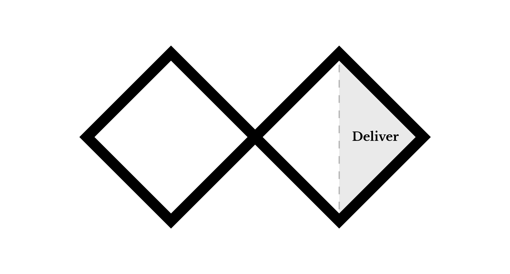

Deliver: Project document
Create a project document that gives readers a clear understanding of your project, from beginning to end. This document enables a reader to get a complete picture of the project and its development, must not overly rely on external sources (for video instance links that can go dead), and should be a comprehensive look at your project from start to finish.
Documents can be created in Adobe InDesign, but documents produced in MS Word are also acceptable. InDesign allows greater customization with layout and typography, allowing you to better showcase design abilities. The project document must be provided as a PDF document.
Document structure:
- Title page
- Title of project
- Your name
- Course name
- Semester and year (ie. FALL 2019)
- Instructor: Instructor name
- Table of contents
- Project overview
- Describe what your project is, what it's about, how you approached it, and what the outcomes were.
- Research and ideation
- Review the work you completed in the discover and define steps of the project.
- Provide an overview of the research process.
- You may use images in this section with accompanying captions to describe them.
- Describe main issues, themes, and ideas explored during concept development.
- Where there external forces, issues, or situations impacted your project? If so, describe them.
- Are there historical and contemporary issues related to the project that should be mentioned?
- Include relevant images, quotations, diagrams, figures, and their respective descriptive captions.
- Include citations according to bibliography format used (APA, MLA) See bibliography section for more information.
- Production and development
- Review the work you completed in the develop steps of the project.
- Provide an overview of the production process and what was produced.
- Include any images, screenshots, and/or documentation that might be helpful to communicate the production of the project. If there are videos, please use screenshots with a caption stating what the screeshot is, and include an entry/link in the bibliogrpahy if the video is available online.
- Conclusion
- Summarize the results, outcomes, and any lessons learned that are worth mentioning.
- Bibliography
- List research materials that support the project with associated citations throughout the document.
- Choose either APA or MLA format. Be consistent throughout the document.
- See this link for more information about writing bibliographies.
- You can add a Citations and/or a References section as well if those are more appropriate to support your research and documentation. See this link for more information.
- Image credits (optional)
- Appendix (optional)
Publishing a PDF with Adobe InDesign
For InDesign tutorials, see LinkedIn Learning.
- Create a new document
- Select the print tab and then select letter size.
- You can use a free Adobe template as a starting point, or start with a blank document.
- For styling, please use the paragraph and character styles panel to manage the document's text styles. To change a style, you can make a change to text in the document, select the corresponding style definition, and click on the Redefine Style button. Make sure you have at least two heading styles defined.
- Table of Contents: Make sure you are using the proper headings styles in the document so that the ToC can automatically update. If there is no table of contents in the template you chose, or you started from scratch, use Layout -> Table of Contents to insert one. You can choose from your predefined styles to create the ToC in the dialog box.
- Exporting: Typically, you will be editing the document as spreads (two pages next to each other as they would appear in a printed book).
- To export spreads as single pages, choose File -> Export. Choose PDF from the dropdown, then save. When the dialog appears, select the Export As Pages setting.
Publishing a PDF with MS Word
For MS Word tutorials, see LinkedIn Learning.
- Create a new from template document or select a blank document
- For starting with a template, select the Paper with Cover and ToC template.
- You can use this template as a starting point and modify the styles, or if starting with a blank document, modify the default styles for headings.
- Table of Contents:
- If you started from scratch and there is no Table of Contents, go to tab called References and select Table of Contents to insert one. You can right-click to update the ToC automatically when adding new sections.
- Use document styles properly. Use headings and subheadings so that your Table of Contents can be automatically regenerated.
- To change styles for the entire document, you can modify a heading, in the Home tab, you can right click the style you wish to update, and choose Update to Match Selection.
- Exporting: File -> Save As. Choose PDF from the dropdown, then save. When the dialog appears, select the Export As Pages setting.
Submission details
- The final document should be exported and uploaded in PDF format.
- The filename should be lastname-firstname_ritiual-project-document.pdf
- Example: collins-michael_ritiual-project-document.pdf